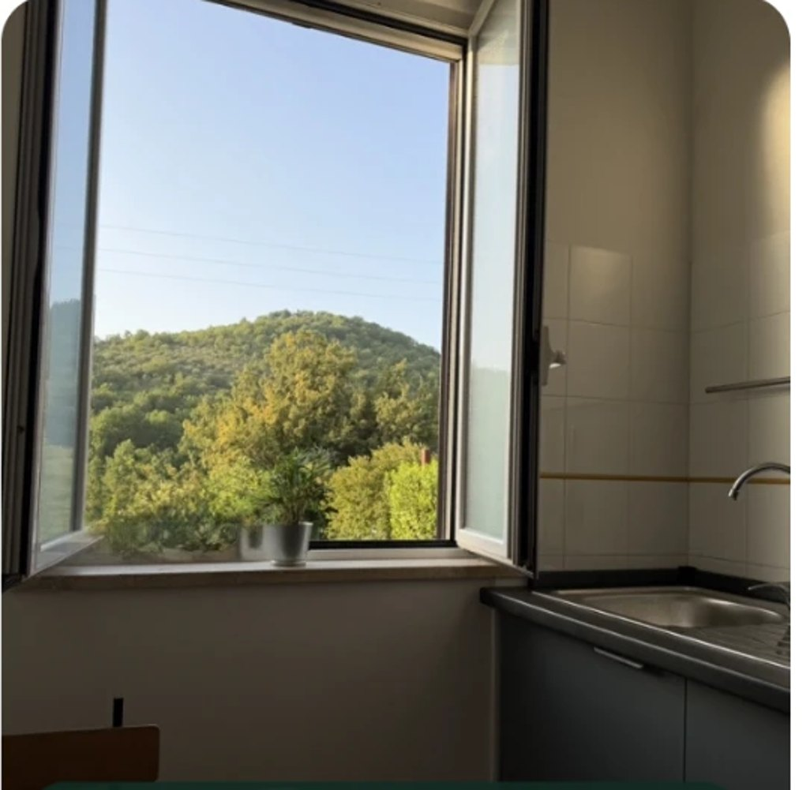

🥾
Passeggiate e percorsi naturalistici
Sentieri, boschi e paesaggi dei Monti Lucretili per camminare con calma e scoprire il territorio, con il kit da escursionismo sempre a disposizione.
Un luogo dove soggiornare in Sabina, ideale per l'escursionismo e il trekking nel Parco dei Monti Lucretili, tra uliveti e boschi, a circa 48 km da Roma.



La casa si trova a Ponticelli, frazione di Scandriglia, a circa 50 km da Roma. È una base tranquilla per il trekking in Sabina e l'escursionismo nei Monti Lucretili, con sentieri, boschi e paesaggi del Parco Naturale Regionale.
I Lagustelli di Percile, formati dai laghi Fraturno e Marraone, sono una meta naturalistica da scoprire durante il soggiorno: un'area umida riconosciuta d'importanza internazionale ai sensi della Convenzione di Ramsar, il cui tratto finale si percorre a piedi.
Resta da visitare anche il Lago del Turano, raggiungibile in auto dalla casa.
A disposizione degli ospiti, gratuitamente.
Un punto di partenza per escursionismo e cammini nella natura della Sabina, tra i sentieri dei Monti Lucretili, i Lagustelli di Percile e il Lago del Turano, con la cultura dell'olio del territorio da scoprire.
Sentieri, boschi e paesaggi dei Monti Lucretili per camminare con calma e scoprire il territorio, con il kit da escursionismo sempre a disposizione.
Un ambiente protetto, ricco di biodiversità, nel quale, alzando lo sguardo, puoi ammirare l'aquila reale.
Scandriglia conserva una forte tradizione olivicola ed è terra di olio extravergine biologico certificato: un'eccellenza locale da conoscere durante il soggiorno.
Per chi soggiorna una settimana, La Casa di Campagna offre il giro sul battello elettrico Thiora con aperitivo a bordo, fino a un massimo di 3 ospiti.
Disponibile fino al 31 ottobre 2026, nei giorni previsti dal programma di Vivi Turano e in base alla disponibilità dei posti. Prenotazione e biglietti a cura della Casa di Campagna.
Indica il giorno di arrivo e quello di partenza: il prezzo viene calcolato sulle date scelte. Puoi poi inviare la richiesta già compilata con il pulsante WhatsApp.
Importante: l'invio su WhatsApp è soltanto una richiesta. La prenotazione diventa definitiva solo dopo la conferma scritta e il ricevimento del bonifico istantaneo dell'importo concordato.
Cancellazione gratuita fino alle ore 18:00 del giorno precedente all'arrivo. Dopo tale termine, l'importo non è rimborsabile.
Per prenotare è necessario inviare la richiesta su WhatsApp. Per informazioni puoi anche chiamarci direttamente.
Scegli le date nella sezione prezzi e invia la richiesta su WhatsApp, oppure chiamaci al 339 690 4793. La prenotazione diventa definitiva dopo la nostra conferma scritta e il bonifico dell'importo concordato.
Il soggiorno minimo è di 2 notti. Il prezzo parte da 87,50 € a notte per l'intera casa, da 1 a 3 persone.
Sì: la cancellazione è gratuita fino alle ore 18:00 del giorno precedente all'arrivo. Dopo tale termine l'importo non è rimborsabile.
L'intera casa fino a 3 ospiti, Wi-Fi, giardino con barbecue, parcheggio gratuito e il kit completo per gli escursionisti (zaini, bastoncini, cartine, binocolo e altro).
A Ponticelli, frazione di Scandriglia (Sabina), a circa 48-50 km da Roma. Si raggiunge comodamente in auto; trovi le indicazioni nella sezione Contatti.
Scrivici le date del tuo soggiorno: verifichiamo la disponibilità e ti aiutiamo a organizzare le escursioni.
Scrivici su WhatsApp →Ponticelli di Scandriglia
Sabina (RI)
Lo hai appena visto: lo mettiamo online con il nome della tua struttura, sistemando insieme testi, foto e dettagli.
pagamento unico
Offerta valida 14 giorni dalla prima visione
Scrivici per maggiori infoo chiama Pier al 331 468 3568